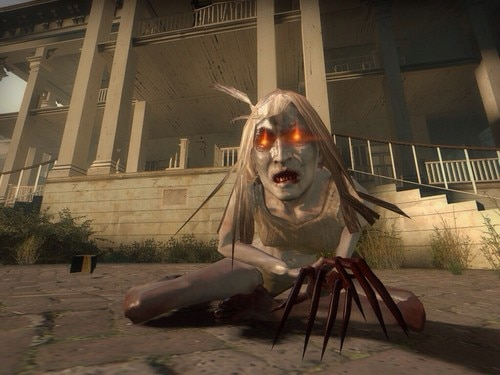
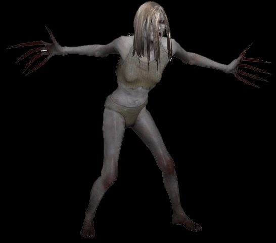

Esta infectada surgió después de la propagación masiva de la gripe verde siendo otra infectada especial introducida en el primer juego Left 4 Dead y una de las más letales conocidas durante el apocalipsis.
Mientras se camina por las caóticas calles de las ciudades o se explora los interiores de edificios que alguna vez llevaron la vida diaria de muchas personas se puede oír el eco de un llanto desconsolado. Ese llanto pertenece a la Witch.
Al contrario de los demás infectados especiales la Witch no acecha a los sobrevivientes de manera activa. Ella puede ser encontrada de dos maneras, caminando sin rumbo o tumbada en el piso. Ella estará cubriendo su rostro mientras suelta un llanto que puede ser llamado desgarrador.

Cuando llega el momento en el que la Witch decide atacar a los sobrevivientes suelta un violento grito y ella va detrás del que le haya alertado. Al mínimo contacto con ella se termina incapacitado en el suelo mientras esta infectada con sus grandes uñas empieza a desgarrar a su presa hasta que termina matándola por completo.
La apariencia de la Witch es similar a la de una adulta joven, no esta tan joven, pero tampoco con una edad tan avanzada. Sus prendas son pantaletas y un top color blanco. Su piel también se ve afectada por la gripe verde aclarándola al completo terminando en un color albino. Sus manos fueron la mayor mutación causada por la cepa al aumentar el tamaño de sus uñas dándole la apariencia de garras.

La Witch tiene una gran cantidad de vida así que la mejor forma de vencer a una Witch es simplemente pasarla de largo. Este tipo de infectado se alertan si son atacadas o alumbradas con una lampara. La mejor estrategia al oír su llanto es apagar la linterna del arma y pasar lentamente de ella, sin atacarla físicamente, con armas de fuego u objetos arrojables.
Debido a la apariencia de la Witch y el llanto constante en el que se encuentra se cree que ella antes de ser una infectada era una mujer que sufría de una gran depresión, la gripe verde al entrar en su sistema alteró los niveles en los que ella se encontraba y por ello siempre se encuentra en un eterno llanto, además esta teoría también explicaría sus cambios violentos de estado al ser alumbrada con una lampara. Se tiene otra creencia que la Witch era una mujer de la vida galante debido a las vestimentas que porta y la mutación que sufrieron sus uñas, esta teoría no cuenta con tantos fundamentos para darla cómo posible y solo es mencionada cuando se intenta explicar porque lleva esas prendas.